Introduction
WIDEPED is an advanced gesture-based home automation system designed to empower individuals with severe physical challenges. Developed by the talented students of Delhi Public School, Nadergul, WIDEPED bridges the gap between disability and independence by enabling users to control home appliances effortlessly with head or hand gestures. The system also integrates emergency communication features for critical situations, ensuring the safety and well-being of its users.
Features
- Gesture-Based Control: Control devices like lights, fans, and buzzers using simple gestures.
- Emergency Support: Trigger an emergency SMS or call using a GSM module.
- Visual Feedback: Real-time visual cues through an OLED display.
- Audio Assistance: Audio prompts for intuitive navigation.
- Wireless Communication: Seamless ESP-NOW connectivity.
- Portable and Affordable: Compact, easy-to-install, and budget-friendly.
How Does It Work?
- Sensors: Detect gestures using the MPU6050 accelerometer.
- Processing: ESP32 processes signals and decides actions.
- Communication: ESP-NOW transmits signals wirelessly.
- Appliance Control: The receiver module activates appliances.
- Emergency Feature: GSM module handles emergency calls or messages.
- Feedback Mechanisms: OLED for visuals, audio prompts, and LCD for status updates.
Gallery
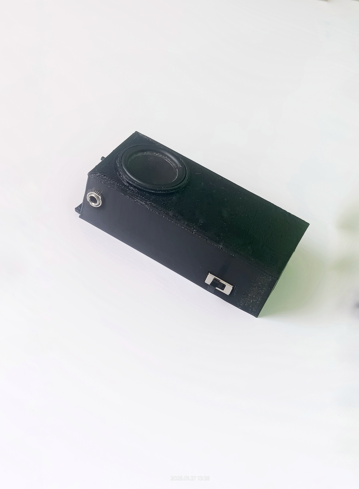
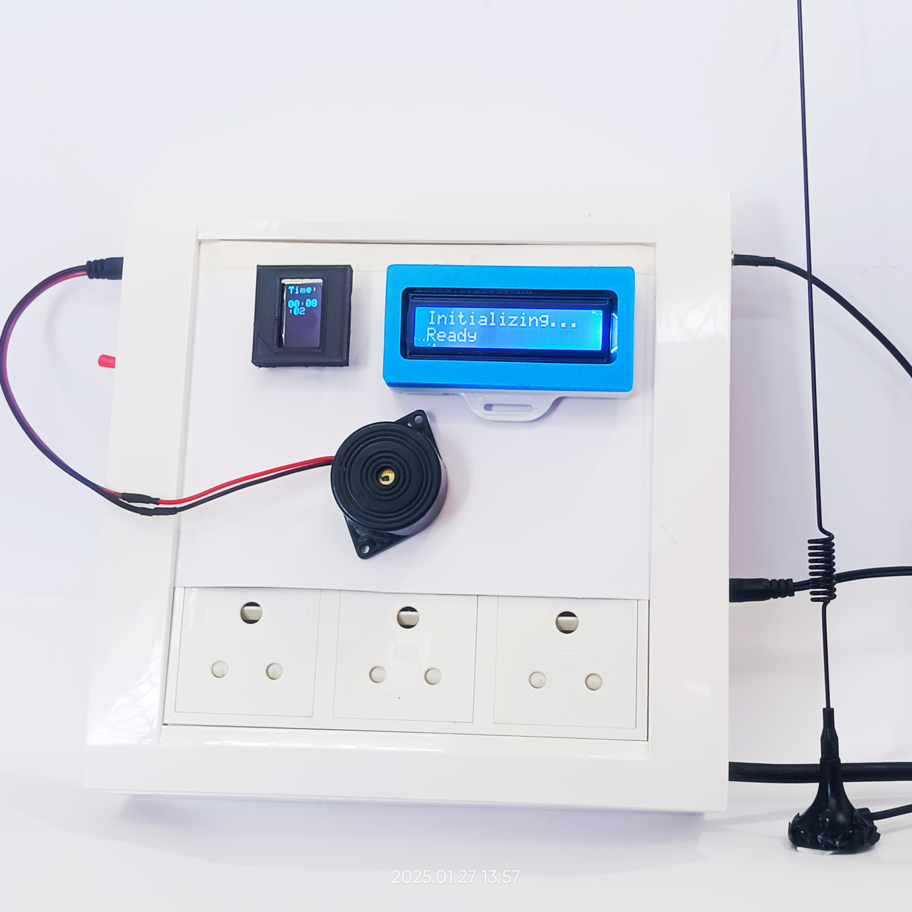
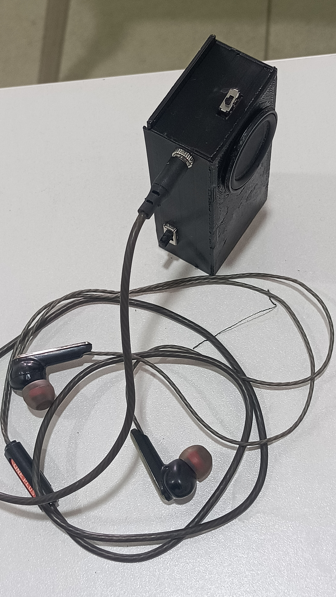
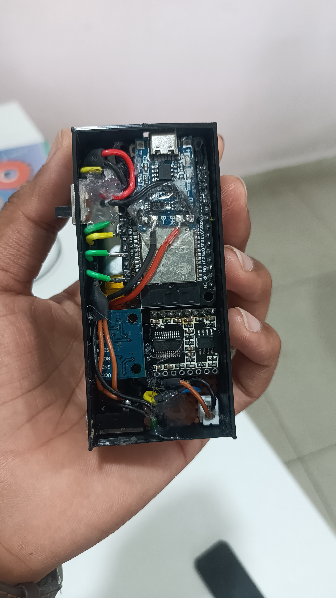
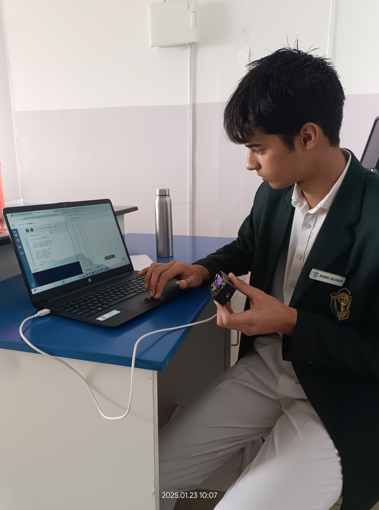
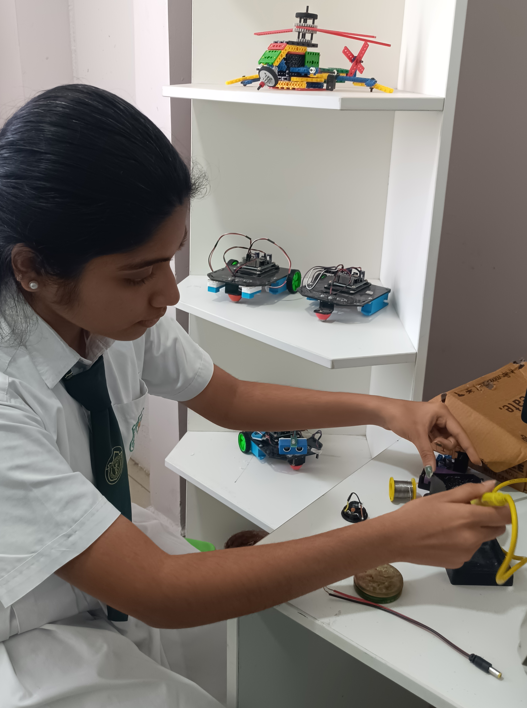
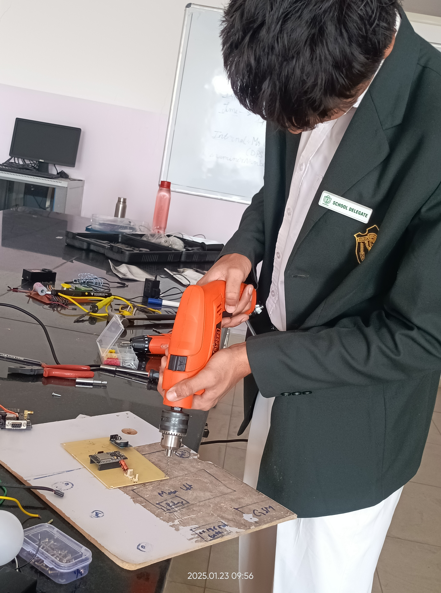
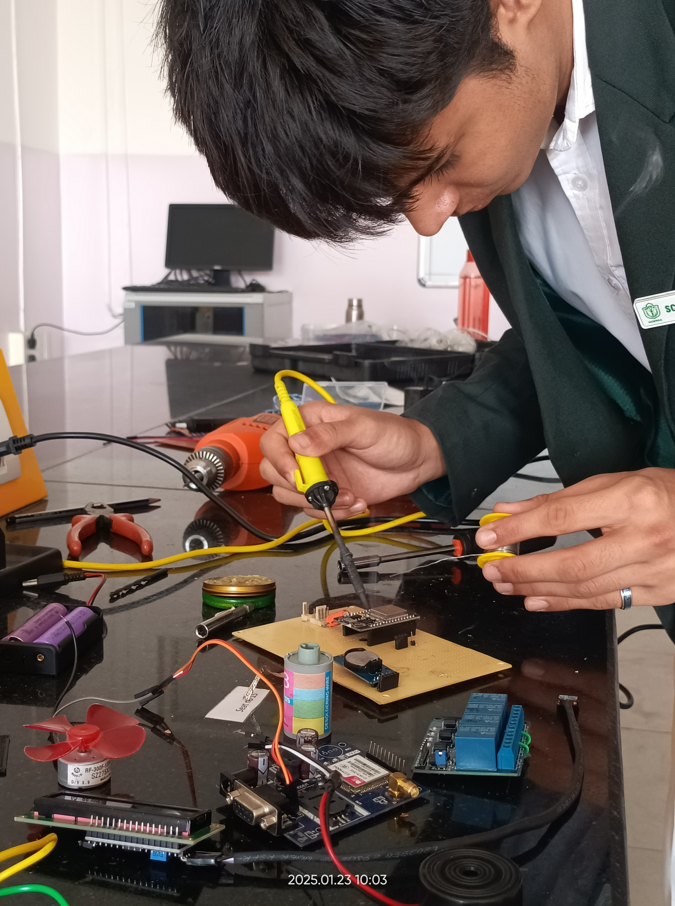
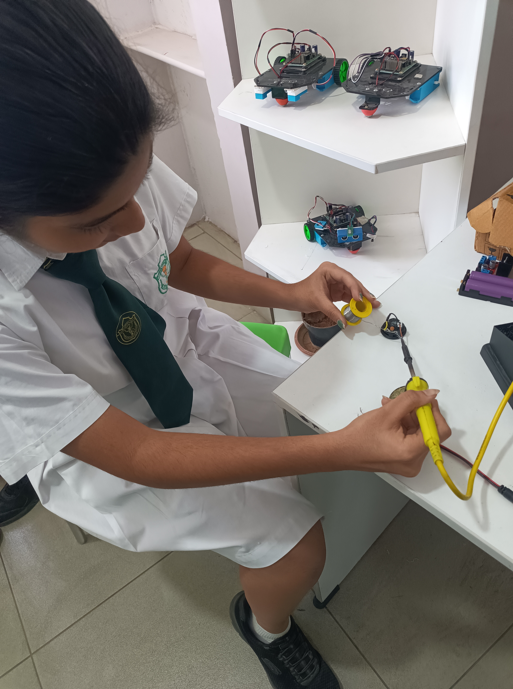
 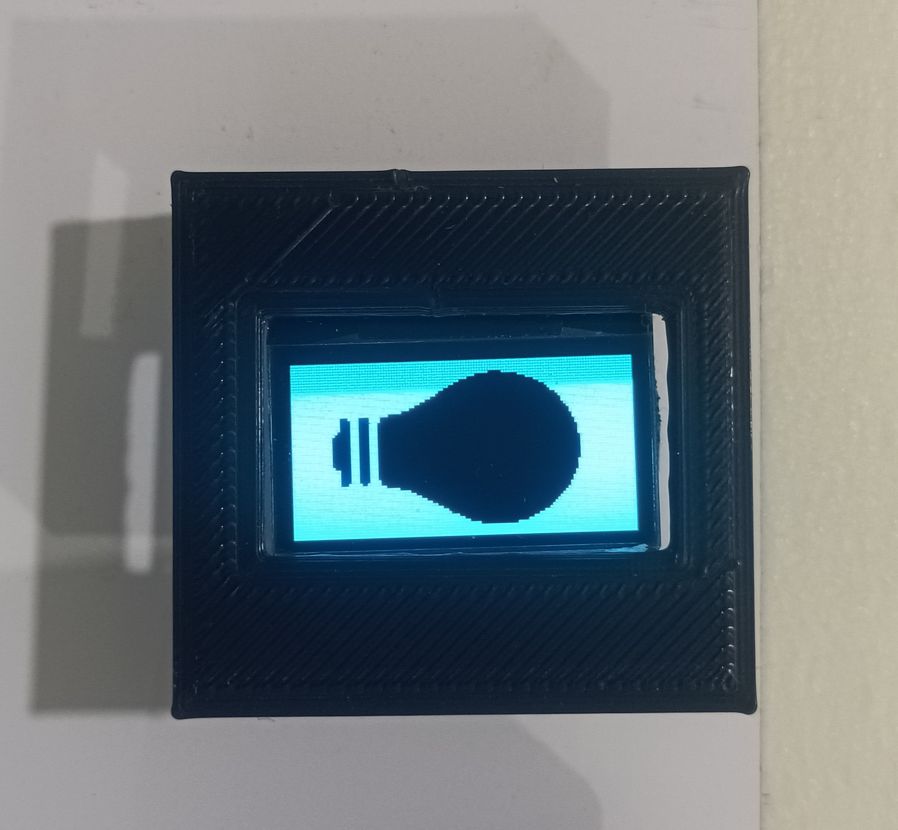
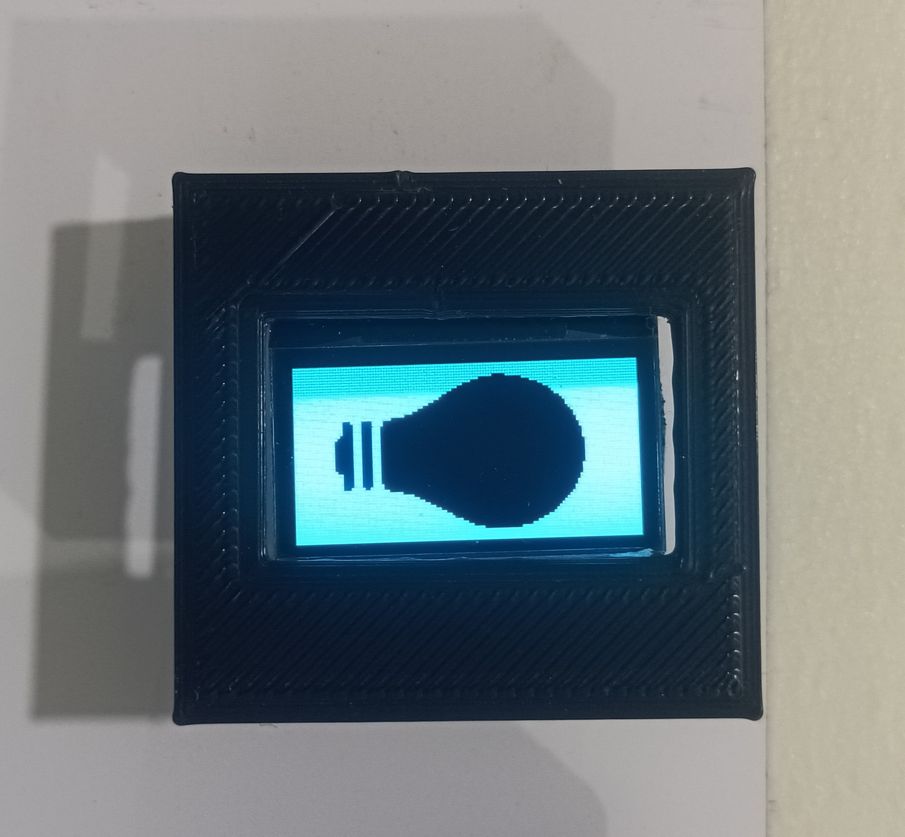
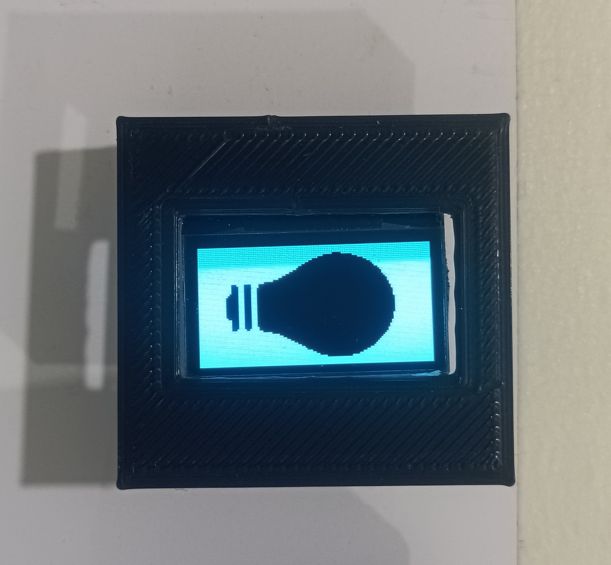
Benefits
- Empowers Users: Provides autonomy for physically challenged individuals.
- Enhanced Safety: Quick emergency communication.
- Cost-Effective: Budget-friendly and easy to install.
- Inclusive Design: Accessible for everyone.
Future Enhancements
- Voice command integration for easier control.
- Smartphone app for remote monitoring.
- Real-time IoT dashboard for caregivers.